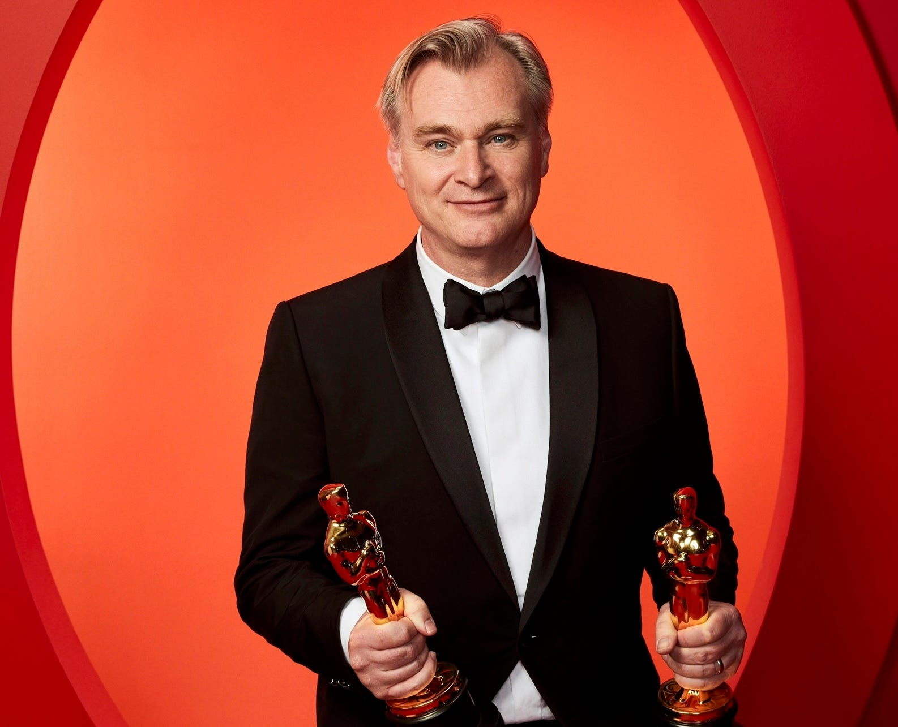

Christopher Nolan
Film Director, Screenwriter, Producer

Christopher Nolan is a renowned filmmaker known for creating thought-provoking and visually stunning movies such as Inception, Interstellar, and The Dark Knight Trilogy.
Born on July 30, 1970, in London, England, Nolan developed a fascination with filmmaking from a young age. His innovative storytelling techniques and complex narratives have made him one of the most influential directors of modern cinema.
Throughout his career, Nolan has earned critical acclaim for his ability to blend intellectual depth with blockbuster entertainment. His films often explore themes of time, memory, identity, and human ambition.